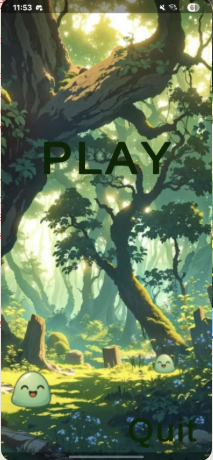

Eat’s a Slime
Un jeu mobile en réalité augmentée à 360°, imaginé et développé en deux jours, en parallèle des cours. Frapper les slimes avant qu’ils ne nous atteignent !
Hit a Slime… avant que le slime ne nous mange !
Le titre est un jeu de mots : « Hit a Slime », parce qu’il faut frapper les slimes avant qu’ils ne nous atteignent ; « Eat’s a Slime », parce que s’ils arrivent jusqu’à nous, c’est nous qui nous faisons manger !
L’idée m’est venue de deux souvenirs de jeux : La Guerre des têtes, auquel je jouais sur Nintendo DS quand j’étais petite, et les MMORPG où l’on commence souvent son aventure en combattant des slimes.
Nous avons réalisé ce projet à deux, en seulement deux jours, tout en suivant nos cours. Le défi était donc de créer rapidement un jeu jouable, avec une mécanique simple, lisible et amusante.
Un combat tout autour de soi
Des slimes apparaissent autour du joueur dans un environnement en réalité augmentée. Il faut tourner physiquement sur soi-même pour les repérer à 360°, puis toucher leur position sur l’écran plusieurs fois pour les éliminer avant qu’ils ne s’approchent trop.
Nous avons prévu deux types de slimes, avec des niveaux de résistance différents. Les plus puissants se distinguent notamment par leurs traînées visuelles (trails). Éliminer les monstres rapporte des points ; le but est de survivre et d’atteindre l’objectif dans le temps imparti.
C’est cette obligation de regarder partout autour de soi qui rend l’expérience amusante : le téléphone devient une fenêtre sur un petit combat qui se déroule dans notre propre espace.
Deux jours pour passer de l’idée au jeu
Nous avons développé Eat’s a Slime en binôme avec Unity et C#, dans le cadre d’un apprentissage de la réalité augmentée sur mobile. Les travaux pratiques nous avaient notamment familiarisées avec AR Foundation, l’apparition d’objets autour de la caméra et les interactions tactiles par raycasts.
J’ai pris en charge une grande partie du développement du jeu, tandis que nous avons travaillé ensemble sur sa conception et son menu. Nous avons choisi un écran d’accueil simple, accompagné d’une musique épique, pour entrer rapidement dans l’action.
Avec un délai aussi court, l’essentiel était de prioriser les mécaniques : apparition des ennemis, déplacement vers le joueur, résistance différente selon leur type, interactions tactiles, score et temps de partie.
Un menu de jeu aux airs de forêt fantastique
Voici l’écran d’accueil du jeu. L’ambiance de forêt et les petits slimes annoncent une aventure légère, tandis que la musique épique donne une dimension plus héroïque au combat.

Faire simple, mais faire jouable
Ce projet m’a appris à aller à l’essentiel : en deux jours, et avec les cours à côté, il fallait choisir ce qui rendrait immédiatement le jeu amusant plutôt que multiplier les fonctionnalités. J’ai particulièrement aimé transformer une idée un peu drôle en une mécanique qui exploite vraiment le fait de jouer en réalité augmentée.
Et surtout, j’aime l’idée qu’un petit slime tout mignon puisse soudain devenir une menace… si on ne se retourne pas assez vite !